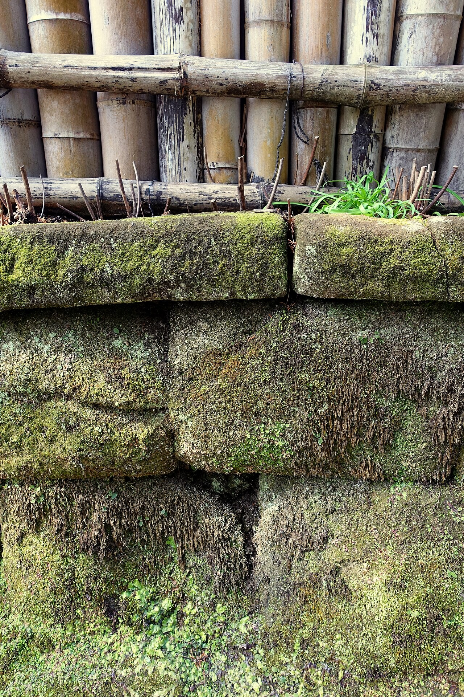
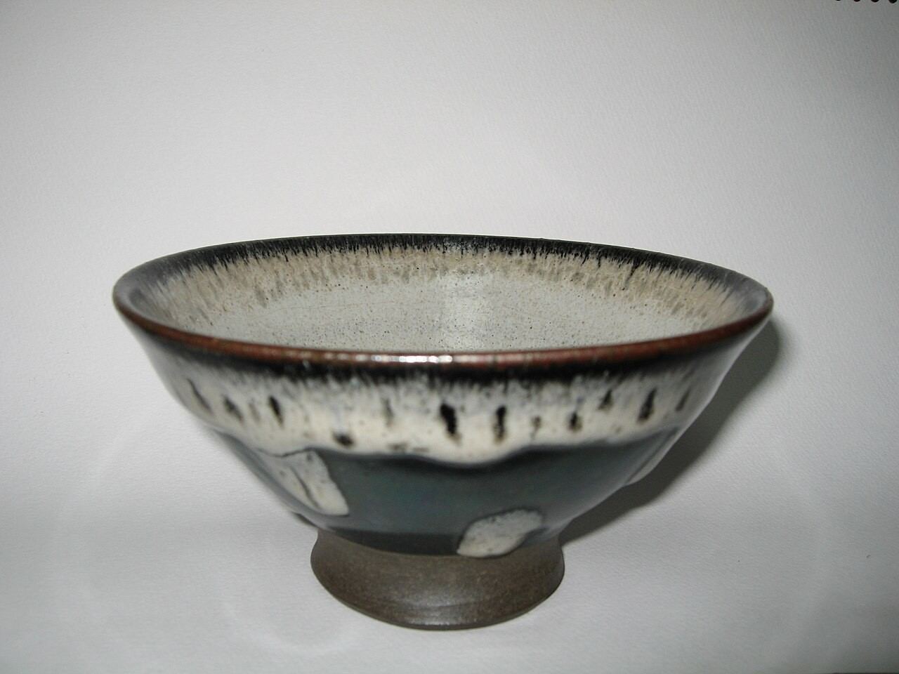

こだわり
素材
小豆は、粒の揃ったものを選び、前の晩から水に浸けておきます。火にかけたら、一度ゆで汁を替えて渋を抜き、焦がさぬよう、ゆっくりと炊き上げます。こしあんは、煮た小豆を丁寧に裏ごしし、水にさらして、なめらかな舌ざわりに整えます。羊羹に使う寒天は、水でよく戻してから溶かし、透き通るような口どけを目指します。砂糖は、菓子ごとに味わいの輪郭が変わるため、甘さの角が立たないものを選び、量を加減しています。素材の数は多くありません。だからこそ、ひとつずつを丁寧に扱います。
あさぎ堂は、素材に向き合う時間を惜しみません。
手仕事
朝は、まだ暗いうちから仕込みが始まります。炊くのも、練るのも、蒸すのも、その日にお渡しする分だけ。練りきりは、白あんをもとにした生地を、手のひらの温もりで整え、三角べらや布巾で、花や葉の表情を写していきます。季節は、色と形に映します。春は花筏、初夏は若楓というように、月ごとに意匠を替えます。同じ名の菓子でも、手のなかで少しずつ違う顔になります。それもまた、手仕事の味わいです。
あさぎ堂は、日々の小さな手間を重ねてまいります。


器と設え
菓子は、口に運ぶまでが菓子です。包装紙は、淡い浅葱色の無地を基調に、季節の一筆を添えます。詰め合わせは、紙箱または桐箱からお選びいただけます。のしは、ご挨拶、ご進物、内祝いなど、用途に合わせてお付けします。お持ち帰りには、手提げもご用意します。贈る方の気持ちが静かに伝わるよう、箱の佇まいにも心を配っています。
あさぎ堂は、菓子とともに、包む時間も大切にいたします。
菓子処 あさぎ堂(見本)